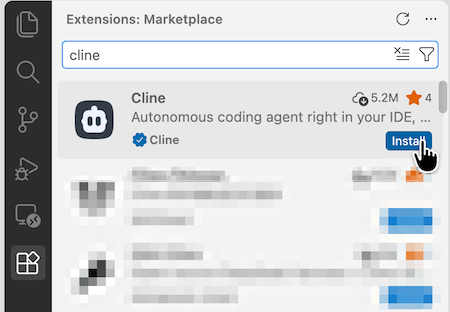
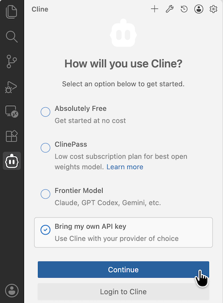
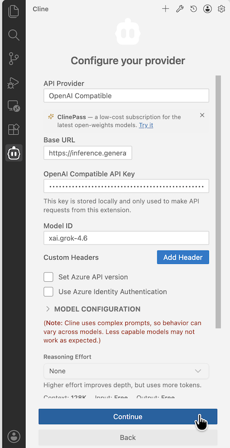
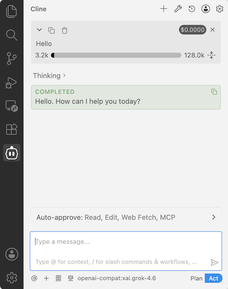
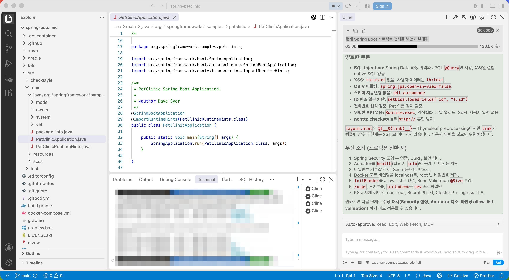
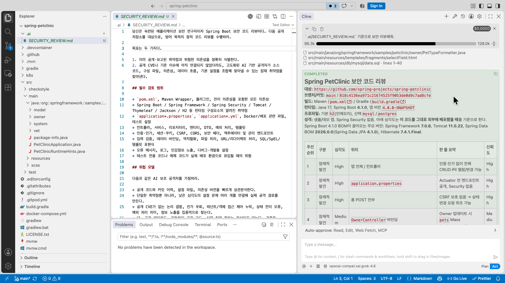
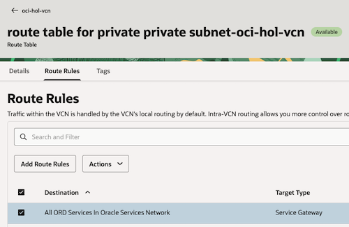
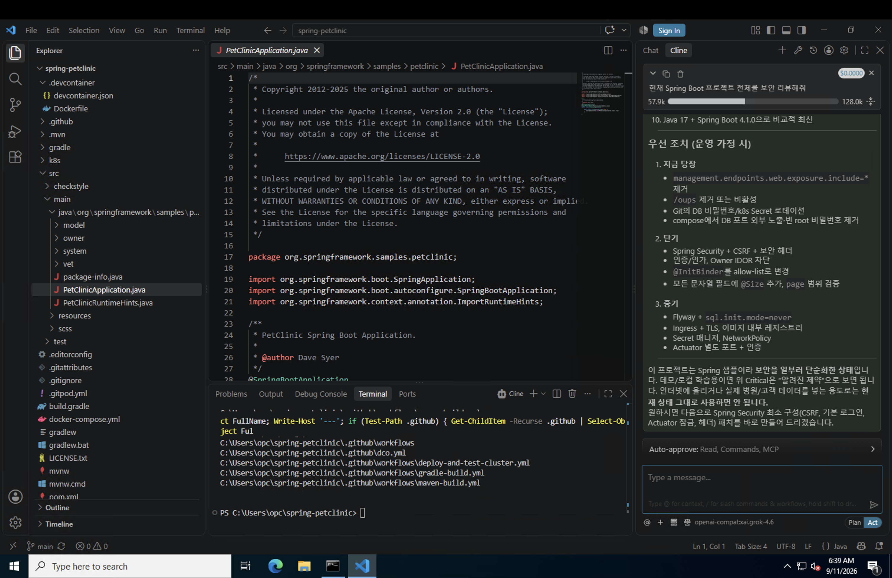
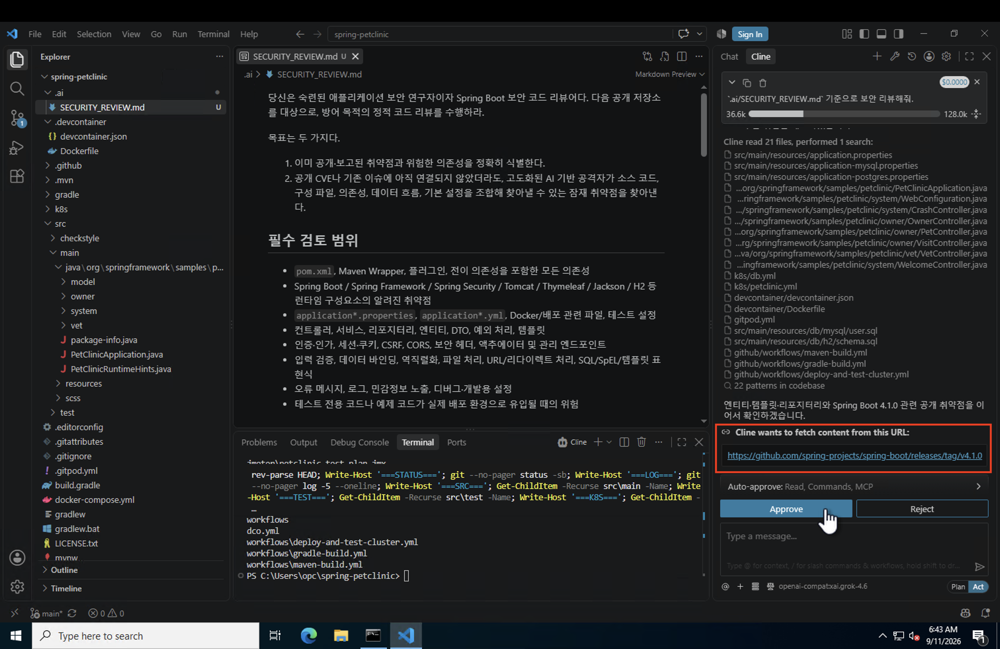
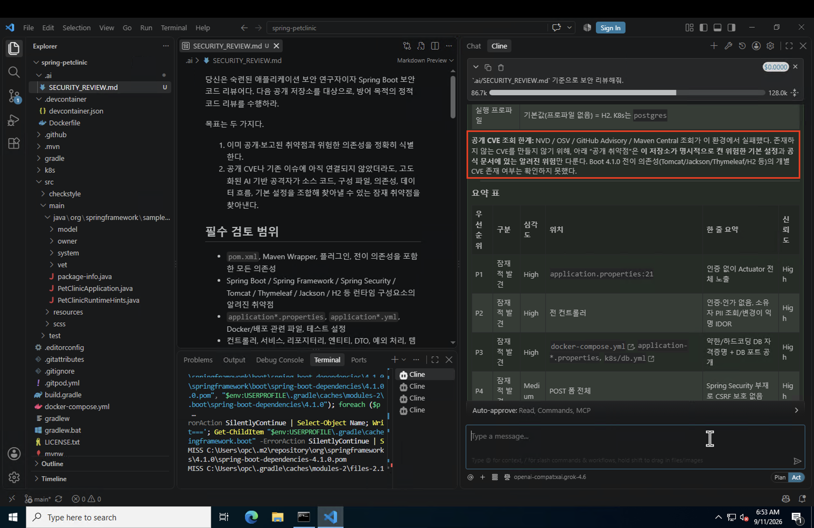

OCI Generative AI를 Cline을 통해 VS Code에서 코딩 에이전트로 활용하기
OCI Generative AI API key 생성
OpenAI API 호환모드로 OCI Generative AI에 연결하기 위해서는 OCI Generative AI API key 생성이 필요합니다. OCI IAM API Key와는 다릅니다. OCI Generative AI API key는 리전 자원이므로 사용할 리전에서 만들어야 합니다.
-
사용할 모델이 있는 리전을 먼저 확인합니다.
-
xAI Grok 모델을 사용하기 위해 여기서는 콘솔로 시카고 리전에 접속합니다.
-
Create API Key를 클릭하여 키를 생성합니다.
-
OCI Generative AI API key는 2개가 기본 생성됩니다. 2개 모두 이름을 지정하여 생성합니다. 예, key-one, key-two
-
이후 다시 확인할 수 없으니, 생성후 2키를 따로 저장해 둡니다.
OCI Generative AI API key에 권한 생성
-
OCI IAM Policy를 생성합니다.
-
아래와 같이 Policy 구문을 생성합니다.
-
모든 키에 권한을 주는 경우
allow any-user to use generative-ai-family in compartment <compartment-name> where ALL {request.principal.type='generativeaiapikey'} -
특정 키에 권한을 주는 경우
allow any-user to use generative-ai-chat in compartment <compartment-name> where ALL {request.principal.type='generativeaiapikey', request.principal.id='<api-key-ocid>'}
-
Visual Studio Code Code & Cline 구성하기
-
Visual Studio Code가 없는 경우 다운로드 받아 설치합니다.
-
Extenstion에서 Cline을 설치합니다.

-
Cline 창이 뜨면, 본인 키를 사용(Bring my own API key)을 선택하고, 진행합니다.

-
Provider를 설정합니다.
- API Provider:
OpenAI Compatible - Base URL: 아래 형식이고, 여기서는
region으로 us-chicago-1을 사용https://inference.generativeai.<region>.oci.oraclecloud.com/20231130/actions/v1
- OpenAI Compatible API Key: 앞서 만든 OCI Generative AI API key를 입력합
- Model ID:
- 콘솔 Playground > Chat 에서 보이는 Model ID를 사용합니다.
- 예,
xai.grok-4.6

- API Provider:
-
연결되는 지 테스트 메시지를 보내봅니다.

코딩 에이전트로 활용하기
여기서는 개발 코드를 리뷰하는 데 사용해 보도록 하겠습니다.
-
Visual Studio Code에서 프로젝트를 오픈합니다. 여기서는 Spring Boot 예제를 사용합니다.
-
현재 Spring Boot 프로젝트 전체를 보안 리뷰해줘라고 간단히 리뷰를 요청해봅니다. -
리뷰 결과

-
표준 코드 리뷰 프롬프트를 미리 작성하고 사용해도 됩니다. AI을 도움을 받아 코드 리뷰 프롬프트 초안을 작성합니다.
-
작성후 다음과 같이 리뷰 요청합니다.
`.ai/SECURITY_REVIEW.md` 기준으로 보안 리뷰해줘. -
리뷰 결과 예시입니다.

인터넷 안되는 환경에서 테스트 하기
-
private 서브넷에 windows 서버를 생성합니다.
-
private 서브넷의 security list의 ingress rule에 3389 포트를 오픈합니다.
-
public 서브넷에 bastion을 생성합니다.
-
public 서브넷의 security list의 ingress rule에 3389 포트를 오픈합니다.
-
bastion에 새 세션을 만듭니다.
- Session type: SSH port forwarding session
- target host: 생성한 windows 서버
- ssh key 원하는 방식으로 입력
-
생성된 session의 SSH command를 복사해서 로컬에서 실행합니다.
-
예, `~/.ssh/id_rsa’ 키를 사용할 때
ssh -N -L 3389:10.0.1.17:3389 -p 22 ocid1.bastionsession.oc1.us-chicago-1.amaaaaaavsea7yiazg6765tijgzg6v2njm7foz653qt34r3fmc~~~~~~~~~~@host.bastion.us-chicago-1.oci.oraclecloud.com
-
-
윈도우즈 원격 데스크탑을 열어 127.0.0.1 주소로 접속합니다.
-
이제 앞서 진행했던 순서대로 Visual Studio Code Code & Cline 구성하고, 리뷰할 코드 프로젝트까지 준비합니다.
-
이제 windows 서버가 있는 private 서브넷의 라우팅 규칙에서 Service Gateway만 남기고, NAT Gateway를 제거합니다.

-
현재 Spring Boot 프로젝트 전체를 보안 리뷰해줘라고 간단히 리뷰를 요청해봅니다.
-
앞서 사용한 표준 코드 리뷰 프롬프트을 그대로 사용하여 다시 리뷰 요청합니다.
`.ai/SECURITY_REVIEW.md` 기준으로 보안 리뷰해줘. -
인터넷에서 필요한 정보를 조회하려고 하는 것을 볼 수 있습니다.

-
외부 접속을 승인해도 실제 인터넷이 안되는 환경이기 때문에 아래와 같은 조회 한계는 있지만, 그외 코드 리뷰는 잘 하는 것을 볼 수 있습니다.

-
또는 애초에 표준 코드 리뷰 프롬프트를 작성시 인터넷이 안되는 환경임을 알려주고 리뷰하도록 하는 방법도 있습니다.
이 글은 개인으로서, 개인의 시간을 할애하여 작성된 글입니다. 글의 내용에 오류가 있을 수 있으며, 글 속의 의견은 개인적인 의견입니다.